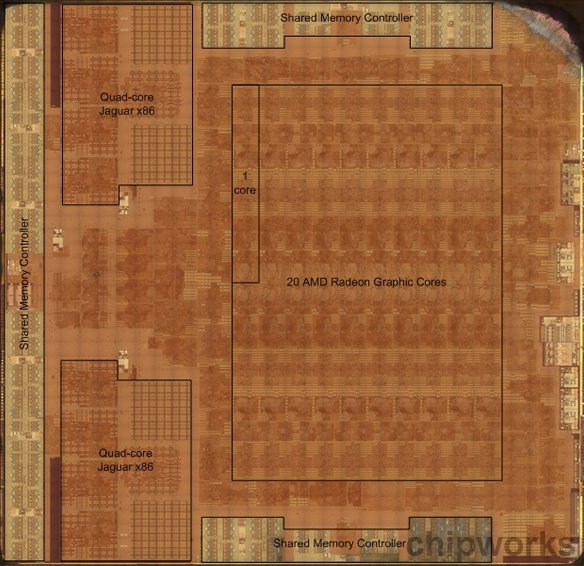
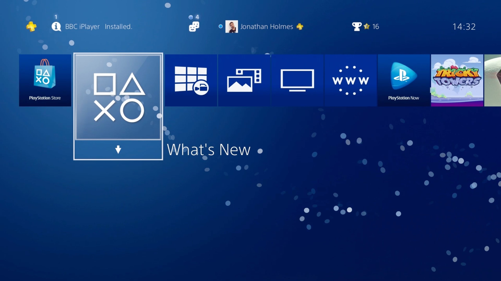

Araştırmalar
Playstation 4 ,Sony tarafından ilk olarak 15 Kasım 2013'te ilk olarak çıkış yaptı. Ardından 2016 sonlarında "Slim" ve "Pro" modelleri piyasaya sürüldü. Playstation 4 işlemcisi kullanım amacından ötürü bir APU işlemciydi. APU işlemciler CPU(Central Processing Unit), GPU(Graphical Processing Unit), MCU(Memory Controller Unit) gibi yapıları bir aradaa içerir. Bu işlemci 28nm 8 çekirdekli x86 64 bit AMD Jaguar işlemcidir.
Playstation 4 işletim sistemi olan OrbisOS bir FreeBSD(Açık kaynak kodlu bir UNIX)'dir.
